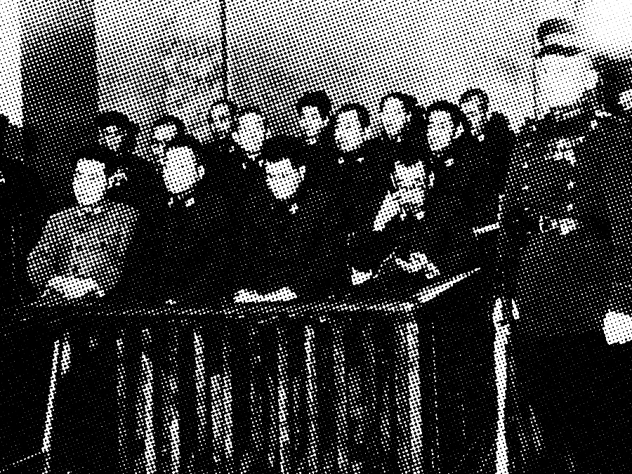

This article was created by
Jake Kuo, Mr. Gilbert, CP World History, Period 1
New York, Thursday, March 1st, 1945.
Adolf Hitler, chancellor and dictator of Germany, committed suicide yesterday afternoon by a gunshot to the head; his body was discovered by members of his personal staff in the Führerbunker, alongside his wife; both bodies were swiftly burned to prevent defilement, and were discovered and identified soonafter by the Soviet Red Army.
This seemingly unprecedented turn of events has been foreshadowed on multiple occasions, especially in Hitler's oration and speeches to the German people; on September first, 1939, after the successful invasion of Poland, Hitler spoke of how he "will not take it off again until victory is secured, or I will not survive the outcome." His death was a combination of his naïveté, hubris, and mien; not only that, but many speculate that the killing of Mussolini just a few days afore led to this inevitable conclusion.
Hitlers death, unfortunately, does not signal the cessation of the war and the inexorable conflict and poverty that will follow across the globe. Europe and many other unfortunate countries still have many issues left to be resolved, such as broken economies and infrastructure. Similarly, Japan continues its brutal reign over much of Asia, and the conflict does not seem to have a clear resolution in sight.
Break the hammer and sickle!
Donate to promote democracy!
Avenge Pearl Harbor!
The military needs YOUR help!
As the war has dragged on, Japanese brutality has increased to highs never seen before; insofar to the lab benches, where countless innocent civilians are experimented on with increasingly cruel and unusual methods. This abuse is especially prominent in Japan's "Unit 731," located in Pingfan district China, where human experiments that rival that

of Josef Mengele take place.Naturally, since Unit 731's headquarters are located within China, many of the subjects are of Chinese nationality; however, many Russians, Koreans, and other prisoners of war were experimented on too; all of the victims are referred to as "maruta," or "logs" by the staff. These experiments—similar to ones conducted within Nazi Germany—are performed sans anesthesia, so as to not skew the results of the barbaric experiments.
Experiments include the vivisections of live civilians, as to learn the value of varying organs; the injection of incurable diseases, as to learn the live effects of disease on the human body; and a plethora of other examples. In these experiments, the majority of subjects died an excruciating death. Even now, many victims are still seeking closure, as the Japanese government continues to stay opaque.
Mirroring the first red scare, many American citizens have grown an irrational fear of the minority Japanese American population that populate California and Hawaii. These fears have culminated in the creation of Japanese American Internment camps, where many Japanese have been forcibly displaced from their homes and moved to tiny huts similar to the ones in Auschwitz.
This not only violates the Fifth Amendment for the Japanese's lack of due process, but also the Fourteenth Amendment as the Japanese have been denied equal protection under the law. Though the creation of these camps have the intent to protect all American citizens from the wrath of the Imperialist Japanese government, it follows the same rhetoric used by Hitler — the very rhetoric we persume to be fighting against.
The logic pertaining to their internment includes a litany of fallacies that even this short opinion essay cannot fully cover. One of the most prominent logical fallacies used against the Japanese is the Hasty Generalization fallacy — since the Japanese government is evil, all Japanese must be as well; but, this fallacy assumes that loyalty was assumed to be suspect based solely on the Japanese ethnicity.
Similarly, the Ad Hominem fallacy was used to justify our concerns, attacking the Japanese and ignoring their pleas due to their ethnicity. Reminiscent of the first red scare, Confirmation Bias only lead to mass hysteria and the eventual arrest of innocent people. In summary, I do not believe the Japanese relocation as a true effort to protect the American people; instead, I find it a method of scapegoating a minority.
The weather today in New York is quite dreary, with a high of 38°F and a low of 28°F. Expect cloudy skies throughout the day with occasional light snow showers in the afternoon and night. Winds will be coming from the northwest at 10 to 15 mph. Humidity levels will be around 70%, making it feel a bit colder than the actual temperature. Residents are advised to dress warmly and carry an umbrella if venturing outside.